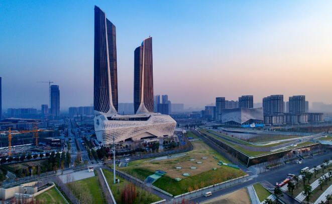

1981年南京被国家列为全国15个 经济中心城市之一；2004年经济中心定位指数排名南京列中国大陆第六，仅次于北上广深津 ；2008年总部经济发展能力列中国第五，排在 北上广深之后。 2014年中国 区域中心城市竞争力评估，南京仅次于深圳广州（不含京沪）。 2015年全国投资吸引力城市排名，南京位列中国第五，紧随北上广深。 2015年南京 产业结构为， 第一产业占据2.4%， 第二产业占据40.3%， 第三产业占据57.3%，第三产业比重位列国内第五，前四为北上广深。 2016年地区生产总值10503.02亿元，列全国第11位，增长8.0%；人均地区生产总值127264元，在中国 直辖市、 副省级市及 省会城市中排名第三，仅次深圳和广州 ；第一产业增加值252.51亿元，增长1.0%；第二产业增加值4117.20亿元，增长5.3%，其中工业增加值3581.72亿元，增长4.8%；第三产业增加值6133.31亿元，增长10.2%。 2017年11月，南京前三季度地区生产总值（GDP）达到了8703.48亿元，增速8.1%。 |
 |